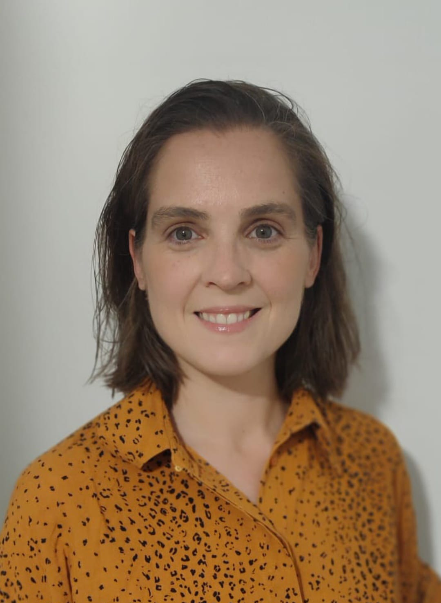

Investigadores del Proyecto

IRENE RODRÍGUEZ MUÑOZ


Licenciada en Física por la Universidad Complutense de Madrid, con especialización en Física Atmosférica.
Esta investigadora cuenta con amplia experiencia en observación y análisis de datos meteorológicos, manejo de instrumentación y desarrollo de aplicaciones y algoritmos basados en datos satelitales.
Su trabajo en este proyecto se ha centrado en la evaluación y regionalización de la humedad relativa, la implementación y verificación de las predicciones estacionales regionalizadas, los esfuerzos de visualización y la aplicación de los resultados al modelo AquaCrop.
JESÚS GUTIÉRREZ FERNÁNDEZ
Doctor en Ciencias Agrarias y Ambientales por la Universidad de Castilla-La Mancha; su tesis versa sobre ciclones mediterráneos. Graduado en Ciencias Ambientales por Universidad de Castilla-La Mancha con un Máster en Meteorología y Geofísica por la Universidad Complutense de Madrid.
Este investigador cuenta con amplia experiencia en el estudio de ciclones y medicanes, así como eventos extremos tales como las olas de calor y la precipitación torrencial.
Su trabajo en este proyecto se ha centrado en la evaluación y regionalización de la temperatura y la precipitación, el estudio de eventos extremos para patrones de precipitación y la aplicación de los resultados a aportaciones de embalses.
MARÍA ORTEGA CAMACHO
Doctora en Ciencias Agrarias y Ambientales por la Universidad de Castilla-La Mancha; su tesis versa sobre vientos de pequeña escala. Graduada en Química por la Universidad de Murcia con un Máster en Sostenibilidad Ambiental por la Universidad de Castilla-La Mancha.
Esta investigadora cuenta con amplia experiencia en el estudio de vientos regionales, el uso de técnicas de regionalización y productos de alta resolución y la investigación para el desarrollo de energía eólica.
Su trabajo en este proyecto se ha centrado en la evaluación y regionalización de la velocidad del viento y la radiación de onda corta, la implementación y la verificación de la predicción estacional regionalizada y el desarrollo de la web del proyecto.